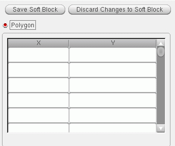

Creating a Polygonal Boundary
To define the boundary parameters required to create a soft layout or soft abstract with a polygonal boundary,
-
Select the Polygon radio button in the Boundary tab.
The table on the right is enabled. All other controls on the tab are disabled because no area estimation is required. -
Type in the coordinates of the polygonal boundary – the x-coordinates into the left-hand column, the y-coordinates into the right-hand column.
 -
Click Save Soft Block.
The boundary parameters are set. The Attributes pane is disabled and the Instances pane re-enabled.
Creating and Registering a User-Defined Area Estimation Function
You might write a simple area estimator as follows.
procedure(myFunction(maskLayoutId @optional (contactArea 1.0)
prog((area)
// Function body to calculate area involving layout instances
foreach(ins maskLayoutId~>instances
area = area + ins~>master~>prBoundary~>area * contactArea
)
return(area)
)
)
You register the function as shown below.
leRegAreaEstimator(
'myFunction
"simpleAreaEst"
'('cellView)
'((contactArea 1.0))
"deferred"
)
Where deferred means that the function is applied only when all the required information is available. In this example, the layout instances will be available only when the Generate All From Source command is run, and only then will the area estimator be executed to calculate the area.
Alternatively, you can register the function as shown below.
leRegAreaEstimator(
'myFunction
"simpleAreaEst"
'('cellView)
'((contactArea 1.0))
"direct"
)
Where direct means the function will be applied as soon as you click Estimate in the Boundary tab. The result is shown in the Area field.
When registered, the area estimator function appears in the Area Estimator list in the Boundary tab of the Configure Physical Hierarchy window in Soft Block mode.
You can also add an area estimation function to the PR Boundary tab of the Generate Layout form. See Adding an Area Estimator Function for Layout Generation.
For more information on registering an area estimation function, see
Related Topics
Soft Block Mode in the CPH Window
Return to top